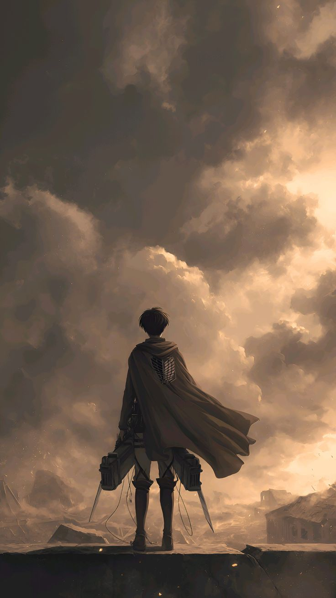

Introducción:
Attack on Titan (también conocida como Shingeki no Kyojin) es una serie de anime y manga creada por Hajime Isayama que se desarrolla en un mundo donde la humanidad vive al borde de la extinción debido a la aparición de gigantes humanoides conocidos como titanes. Para protegerse, las personas construyen enormes murallas que resguardan sus ciudades, generando una aparente seguridad que se ve abruptamente destruida cuando un titán de tamaño colosal rompe una de las murallas. A partir de ese momento, la historia sigue a Eren Yeager y sus amigos, quienes se unen al ejército con el objetivo de enfrentar a los titanes y descubrir la verdad detrás de su existencia.
A lo largo de la serie, la trama evoluciona desde una lucha por la supervivencia hacia una narrativa mucho más compleja, explorando temas como la libertad, la guerra, la moralidad y la naturaleza humana. Con giros argumentales impactantes y personajes profundamente desarrollados, Attack on Titan se destaca por su capacidad de cuestionar las motivaciones y decisiones de sus protagonistas, mostrando que no siempre hay un claro límite entre el bien y el mal. Esta combinación de acción intensa y reflexión filosófica ha convertido a la obra en una de las más influyentes y aclamadas de su generación.